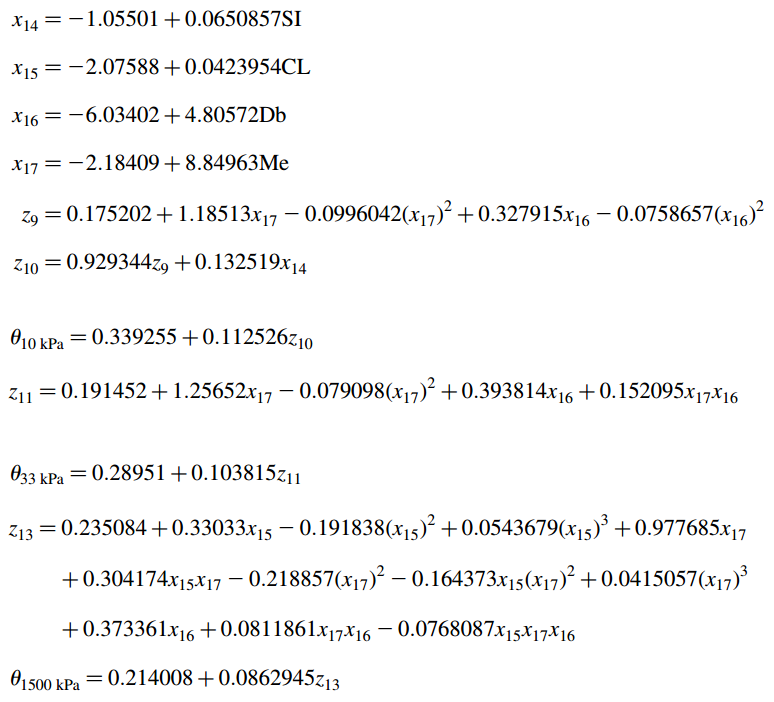

5.6 Exercícios
- Execute as seguintes expressões no R mostrando os resultados obtidos.
1 + 1
100:130
5 - +1
3 % 5
2 * 3
4 - 1
6 / (4 - 1)- Utilize uma expressão para cada item.
- Escolha um número e some 3 a ele.
- Multiplique o resultado por 2.
- Subtraia 10 da resposta.
- Divida o que foi obtido por 4.
- Calcule \(\sqrt{16}\), \({16^{0.5}}^{3}\), \({(16^{0.5})}^{3}\) e \(4^{\frac{3}{2}}\).
- Teste as expressões
log10(1000),log(1000),exp(log(1000)). Depois teste a expressãolog2(64). Verifique se você entendeu as diferentes funções logarítmicas.
Defina as variáveis abaixo tomando cuidados ao nomear as variáveis, conforme visto em sala de aula. Mostre os valores para as seguintes constantes:
Velocidade da luz: \(\nu = 2.998 \times 10^{8} \left[m \, s^{-1}\right]\)
Carga elementar ou eletrônica: \(e = 1.602 \times 10^{-19} \left[C\right]\)
Permissividade do vácuo: \(\epsilon_{0} = 8.85 \times 10^{-12} \left[C^{2} \, N^{-1} \, m^{2}\right]\)
Constante de Planck: \(h=6.626 \times 10^{-34} \left[J \, s\right]\)
- Constante de Stefan Boltzman: \(\sigma = 5.67 \times 10^{-8} \left[W \, m^{-2} \, K^{-4}\right]\)
Constante solar: \(S_{0} = 1380 \left[W \, m^{-2}\right]\)
Constante de Avogadro: \(N_{A} = 6.022 \times 10^{23} \left[mol^{-1}\right]\)
Constante dos gases para o ar seco: \(R_{d} = 287.04 \left[J \, K^{-1} \, kg^{-1}\right]\)
Constante dos gases ideais para o vapor: \(R_{w} = 461.5 \left[J \, K^{-1} \, kg^{-1}\right]\)
Densidade do ar seco para CNTP (à 0 ° C em 1000 mb): \(\rho=1.2754 \left[kg \, m^{-3}\right]\)
Pressão média ao nível médio do mar para atmosfera padrão: \(P_{0}=1013.25 \left[mb\right]\)
Temperatura ao nível médio do mar para atmosfera padrão: \(T_{0}=288.15 \left[K\right]\)
Calor latente de vaporização ou condensação (à 0 °C): \(\lambda_{v} = 2.501 \times 10^{6}\left[J \, kg^{-1}\right]\)
Calor latente de fusão (à 0 °C): \(\lambda_{f} = 0.334 \times 10^{6}\left[J \, kg^{-1}\right]\)
Massa molecular da água: \(M_w = 18.016 \left[g \, mol^{-1}\right]\)
Peso molecular do ar: \(M_{ar} = 28.96 \left[g \, mol^{-1}\right]\)
Raio da terra: \(r = 6.37 \times 10^{6} \left[m\right]\)
Velocidade angular da Terra: \(\Omega=7.29 \times 10^{-5} \left[rad \, s^{-1}\right]\)
- Como você pode fazer para que a constante
piseja mostrada com 20 dígitos? (b) Como voltar a trabalhar a com 7 dígitos novamente? c. Mostre o número neperiano com 7 dígitos.
- Como você pode fazer para que a constante
- Determine a temperatura de bulbo úmido (\(T_{w}\)) usando a expressão empírica (Stull, 2011) abaixo. Salve os resultados em variáveis diferentes. Determine a \(T_{w}\) para temperatura do ar \(T = 20°C\) e Umidade relativa $UR = 70 % $ ? Defina variáveis para os valores de \(T\) e \(UR\) solicitados e substitua-os na equação de \(T_{w}\). Não é necessária a conversão dos dados expressos em % para aplicação na equação.
\[ \begin{aligned} T_{w}=T\cdot atan\left [ 0.151977\cdot \left ( UR+8.313659 \right )^{1/2} \right ]+ \\ atan\left (T+UR \right )-\\ atan\left ( UR-1.676331 \right )+\\ 0.00391838\left ( UR \right )^{3/2}\cdot atan\left ( 0.023101\cdot UR \right )-\\ 4.686035 \end{aligned} \]
- Determine os valores de umidade do solo:
- no potencial hídrico de 10kPa (\(\theta_{10kPa}\))
- na capacidade de campo (\(\theta_{33kPa}\))
no ponto de murcha permanente (\(\theta_{1500kPa}\))
utilizando o conjunto de equações de pedotransferência abaixo (Tomasela et al. 2003):

- Considere \(SI = 16.29\) (%), \(CL = 49.25\) (%), \(Db = 1.25\) (\(g \, cm^{-3}\)), \(Me = 25\) (%), onde \(SI\) é a porcentagem de silte no solo, \(CL\) é a porcentagem de argila, \(Db\) é a densidade do solo e \(Me\) é a umidade equivalente em %. Não é necessária a conversão dos dados expressos em % para aplicação nas equações.
- Arredonde para 2 casas decimais os resultados da questão 8. Dica ver
?round.
- Instale a última versão do R no (seu) computador usado para resolução desta lista. Crie um script chamado
solucao-q10-NomeDoAluno.Rcontendo os códigos gerados para solução das questões 7 e 8. Faça as seguintes alterações no código do script:
no código da questão 8, utilize a temperatura do ar (\(T\)) de 30°C e Umidade relativa (\(UR\)) de 30% para calcular \(Tw\).
no código da questão 9, considere \(SI = 13\) (%), \(CL = 37\) (%), \(Db = 1.3\) (\(g \, cm^{-3}\)), \(Me = 21\) (%) para recalcular \(\theta_{10kPa}\), \(\theta_{33kPa}\) e \(\theta_{1500kPa}\).
após os códigos usados para resolver as questões 8 e 9, adicione uma nova linha com a expressão
sessionInfo().Finalmente rode o script usando o R no modo não iterativo. Anexe o arquivo de saída
solucao-q10-NomeDoAluno.Routcomo resposta para este problema.
Instruções para entrega da resolução da lista de exercícios.
A resolução da lista deve conter um único arquivo compactado nomeado segundo o padrão lista1-adar-NomedoAluno.zip.
O arquivo compactado deve incluir pelo menos 3 arquivos:
-
solucao-q10-NomeDoAluno.R: um script com os códigos usados para resolver a questão 10. -
solucao-q10-NomeDoAluno.Routum arquivo texto de saída gerado (automaticamente) pelo R quando usado no modo não iterativo (Batch). Também faz parte da resolução da questão 10. -
lista1-adar-NomedoAluno.Rmd: arquivo Rmarkdown gerado no RStudio (File ▶ New File ▶ R Notebook) e editado de forma que contenha o texto e o código (chuncks) necessários para resolução das questões 1 a 9.
Sempre procure criar variáveis para cada etapa da resolução das questões. Utilize nomes contextualizados e intuitivos. Siga as boas práticas recomendadas no material para nomear as variáveis.
-
(Opcional)
lista1-adar-NomedoAluno.htmlarquivo html gerado pelo RStudio (botão knit na aba do painel do editor) a partir do arquivolista1-adar-NomedoAluno.Rmd.